███╗ ███╗███████╗ █████╗ ███████╗██╗ ████╗ ████║██╔════╝██╔══██╗██╔════╝██║ ██╔████╔██║█████╗ ███████║███████╗██║ ██║╚██╔╝██║██╔══╝ ██╔══██║╚════██║██║ ██║ ╚═╝ ██║███████╗██║ ██║███████║██║ ╚═╝ ╚═╝╚══════╝╚═╝ ╚═╝╚══════╝╚═╝
2. Definiciones
La matriz revela que la gran mayoría de los 47 textos no ofrece una definición cerrada y universal de la Arqueología de Medios, sino que la operacionalizan como práctica. Las definiciones más explícitas proceden de tres tradiciones:
Tradición foucaultiana-discursiva: Huhtamo la define como "a critical practice that excavates media-cultural evidence for clues about neglected, misrepresented, and/or suppressed aspects of both media's past(s) and their present"; Elsaesser señala que su necesidad es "read [media history] against the grain".
Tradición materialista-técnica (Ernst/Kittler): Ernst distingue que la Medienarchäologie no es primariamente excavación de tecnologías pasadas, sino investigación de arché —los orígenes y condiciones de posibilidad de los medios en sentido sistemático—: "Die arché meint Ursprünge der Medien sowohl in einem zeitlichen wie in einem systematischen Sinn".
Tradición anarqueológica (Zielinski): Se define como "anarchaeological expedition" que rechaza narrativas progresivas y teleológicas, enfocándose en "constelaciones olvidadas" y "fortuitous finds" en lugar de orígenes o continuidad.
Parikka articula una síntesis operativa al afirmar que "Media archaeology is not a school of thought or a specific technique, but is an emerging attitude and cluster of tactics" y que "exists somewhere between materialist media theories and the insistence on the value of the obsolete and forgotten" (Parikka, 2015)
Tensiones y Divergencias Conceptuales
Un patrón central es la tensión entre dos modalidades del campo:
| Modalidad | Énfasis | Autores clave |
|---|---|---|
| Discursivo-histórica | Archivo, narrativas alternativas, topoi | Huhtamo, Elsaesser, Foucault |
| Materialista-técnica | Señales, operaciones, tiempo-crítico | Ernst, Kittler, Siegert |
| Anarqueológica | Heterogeneidad, deep time, variantología | Zielinski, Gould |
| Decolonial | Modernidad/colonialidad, archivo ausente | Sengupta, Mignolo, Quijano |
| Experimental/práctica | Re-enactment, reconstrucción, "second originals" | Fickers, Guez, Grau |
Natale sintetiza bien esta pluralidad: "there is not just one 'media archaeology,' but several of them". Goddard y otros refuerzan esto llamándola una "travelling discipline" o incluso "indiscipline".
Conceptos Parientes Recurrentes (Columna 6)
- Deep time / Tiempo profundo: Presente en Zielinski, Parikka y Burbano; orienta el análisis hacia orígenes geofísicos y temporalidades no-humanas.
- Anarchaeology / Anarquaeología: Concepto zielinskiano retomado por Goddard y la tradición del variantology, que privilegia las derivas y callejones sin salida.
- Diagrama materialista / Materialist media diagrammatics: Parikka lo presenta como horizonte hacia el cual tiende la arqueología de medios.
- Medios muertos / Dead media: Concepto de Bruce Sterling retomado en múltiples fuentes.
- Re-enactment: Emerge con fuerza en la tradición experimental como metodología.
- Técnicas culturales (Kulturtechniken): Concepto asociado a la teoría alemana post-Kittler.
- Medios imaginarios / Imaginary media: Desarrollado por Huhtamo y Kluitenberg.
Divergencias Geopolíticas y Ampliaciones del Campo
Un hallazgo relevante es la aparición de perspectivas que desafían el eurocentrismo del campo:
La arqueología decolonial de Sengupta propone investigar "how coloniality/modernity may have informed many of those epistemological conditions".
La perspectiva latinoamericana de Burbano abre el campo hacia "alternative media technologies".
El texto brasileño de Telles propone operaciones de "des-escrever, escrever, descrever e re-escrever" como metodología de "hack historiográfico".
3. Posturas Teóricas y Epistemológicas
El análisis revela un campo de tensiones productivas entre distintas orientaciones epistemológicas que comparten, sin embargo, un núcleo anti-teleológico, materialista y foucaultiano.
1. Cluster Foucaultiano-Materialista Nuclear
- Zielinski (Anarchaeology / Variantología). Postura anarquaeológica y no-lineal.
- Parikka — Operative Media Archaeology. Postura materialista, foucaultiana, no hermenéutica y poshumanista.
- Ernst — Digital Memory and the Archive. Postura materialista, centrada en el primado del registro de la máquina.
- Ernst — Medien Definitionen. Investiga los orígenes y condiciones de posibilidad.
- Ernst — Medienarchäologische Blick. Subraya que el mirar arqueológico no ve imágenes sino datos.
- Huhtamo & Parikka — Media Archaeology. Postura anti-teleológica, crítica de narrativas canonizadas.
2. Cluster Posthermenéutico y Técnico-a-Priori
- Parikka — Conditions of Media's Possibility. Desplaza la ontología hacia operaciones ónticas.
- Fickers & Weber — Experimental Media Archaeology. Material, experimental, sensorial y reflexiva.
3. Cluster Genealógico y Foucaultiano Ampliado
- Packer — The Conditions of Media's Possibility. Foucaultiana, posestructural y anti-teleológica.
- Geoghegan — After Kittler. Genealógica, praxeológica y poskittleriana.
- Schröter — Einführung Medienarchäologie. Subraya la heterogeneidad y contingencia.
4. Cluster Materialista-Experimental y de Reconstrucción
- Stricot — Media Archaeology and Reconstruction. Centrada en el proceso antes que en el resultado.
- Zielinski — Technological Arts Preservation. Poiética, cognitivo-especulativa y material.
5. Cluster Nuevo Materialismo y Geofísico
- Parikka — Geology of Media. Nuevo materialismo posthumanista y geofísico.
- Goddard. Articula arqueología con ecología de medios.
6. Cluster Anti-Progresista y Crítico-Cultural
Hertz, Parikka, Morgan, Elsaesser, Natale. Posturas críticas de la obsolescencia programada y atentas a las crisis de causalidad.
7. Cluster Decolonial y Crítico de la Geopolítica
Sengupta y Burbano. Cuestionan el sesgo occidental y exploran tecnologías marginales del Sur Global.
8. Cluster del Reenactment y la Historia Performativa
Franco, Temkin, Siegmund, Traub. Historia performativa, centrada en la legibilidad algorítmica y la memoria corporal.
9. Clusters Adicionales (Algorítmica, Sonido, Visualidad, Topoi)
Incluye los trabajos de Link, Sterne, Cedeño y Huhtamo que abordan desde la reconstrucción del ciclo de reloj hasta topoi culturales.
Síntesis de Patrones y Divergencias:
- Anti-teleología generalizada.
- Materialismo técnico de diverso grado.
- Herencia foucaultiana ubicua.
4. Metodologías Dominantes
El análisis revela una tensión productiva entre metodologías textuales-discursivas, experimentales-reconstructivas y teórico-genealógicas.
- Reconstrucción y retroingeniería: Ernst, Link, Burbano, Stricot.
- Re-enactment como heurística: Fickers & Weber, Burbano.
- Genealogía y lectura de archivo: Huhtamo, Elsaesser, Sterne, Schröter.
Divergencias clave: Objeto discursivo vs. objeto operativo; Escala del objeto; Obsolescencia humana vs. técnica.
5. Objetos de Estudio y Fuentes
Extraordinaria heterogeneidad: desde archivos medievales hasta micrografías OLED.
- Predominio de lo técnico-material.
- La obsolescencia como criterio constitutivo.
- Escalas extremadamente heterogéneas.
Patrones en las fuentes: Primacía del archivo técnico, Corpus heterodoxos, La ausencia como corpus (Sengupta).
6. Núcleos de Debate
Cuatro ejes estructurantes:
- Progreso lineal vs. no-linealidad histórica.
- Materialidad técnica vs. discurso/semántica.
- Centro hegemónico vs. genealogías periféricas o decoloniales.
- Archivo/preservación vs. reactivación/reenactment.
Hallazgo transversal relevante: Existe una tensión irresuelta entre la diagramática materialista de Ernst y la diversificación del objeto (Sengupta, Burbano, Huhtamo). Esta tensión es su productividad epistémica central.
7. Relaciones Interdisciplinarias y Limitaciones
Tres modalidades:
- Polo técnico-científico: Hacia matemáticas, física, ingeniería.
- Polo humanístico-genealógico: Hacia filosofía, historia, estudios visuales.
- Polo práctico-experimental: Hacia archivística, museología, investigación-creación.
Limitaciones recurrentes: Ausencia de economía política, Sesgo occidental/eurocéntrico, Indefinición metodológica, Fragilidad archivística y pérdida material.
8. Sala Arché [LAB]
9. Bibliografía
10. Bitácora de Sesiones
La caja negra algorítmica y la pregunta por lo invisible
Hay algo perturbador en comenzar una sesión hablando de cajas negras. No como metáfora, sino como condición material. Llegué al seminario con la sensación de quien sabe que hay algo operando por debajo de la superficie -un zumbido, un proceso- que aún no se puede tocar. Para mi, la genealogía de desarrollo del Deep Learning que recorrimos no compromete una historia de éxitos tecnológicos acumulativa porque se parece más a una serie de capas sedimentadas que se presionan entre sí. Es decir, que esta revolución no llegó de golpe por un proceso evolutivo, sino que ha venido fermentándose desde la profundidad del pasado, o como “variaciones” que escalan tiempos profundos según el an-arqueólogo y alquimista de medios Siegfried Zielinski. El tiempo tecnológico no avanza; se acumula, se pliega, se entierra y reaparece. Las redes neuronales profundas son, en ese sentido, un estrato más uno que procesa los estratos anteriores sin saberlo.
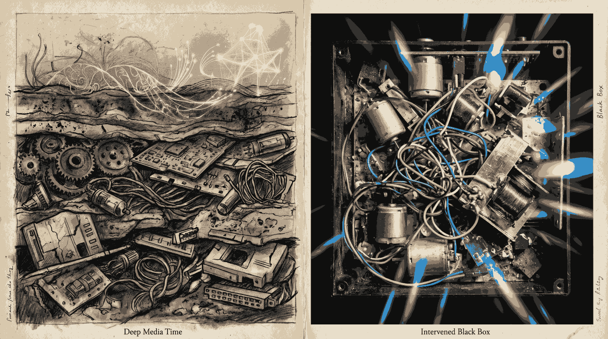
La opacidad me inquieta como investigador, pero me convoca como artista. Si entre el input y el output existe un territorio oscuro donde la máquina "decide", entonces ese territorio es precisamente donde quiero intervenir. ¿Puede una instalación sonora, audio-visual, o multimedial hacer percibible ese proceso? ¿Puede el espacio expositivo donde conviven el cuerpo del espectador y el cuerpo de la máquina volver sensible lo que el algoritmo oculta? La práctica artística como instrumento de apertura. Una especie de bisturí oblicuo. Entonces la noción de Zombie Media, o Medios Zombies cobra una densidad nueva. Si los modelos de IA reciclan y recontextualizan el archivo medial preexistente, entonces los medios no mueren: son reanimados, procesados, vaciados de su historicidad y devueltos como simulacro funcional.
Eso tiene consecuencias éticas y estéticas que no puedo ignorar. Me quedé pensando en la imagen del "investigador robot" atravesando la Biblioteca de Babel. Es una figura hermosa y ominosa a la vez: procesa todo, pero no recuerda nada en el sentido que nosotros somos los que recurdan. No hay experiencia, solo correlación. Por eso la metodología MEASI me parece estratégicamente valiosa: no para delegar la interpretación, sino para usar la IA como superficie de refracción, o como un espejo que devuelve el objeto de estudio ligeramente desplazado, mostrando ángulos que la lectura directa no alcanza.
El espejo y la máquina de clasificación
Dos documentales. Dos maneras de mirar la misma máquina. Y en el medio, yo tratando de ntender desde qué lugar me sitúo -no solo como investigador, sino como alguien que piensa en las máquinas como sujetos del arte. Coded Bias llega como un golpe que ya esperabas pero que duele igual. Le pone cuerpo, dirección y código postal a la violencia algorítmica. El sistema de reconocimiento facial que falla sistemáticamente en rostros negros es la sedimentación de décadas de exclusión estructural convertida en herramienta de vigilancia. El Sisbén IV, que analizamos en clase, opera con la misma lógica: la vulnerabilidad social reducida a puntaje, la complejidad de una vida traducida a variable. El ruido estadístico como la malinterpretación de un error puede dejar a una familia por fuera. En este lugar, el algoritmo produce la realidad, la delimita, y decide quién entra y quién no en el campo de lo atendible.
Eso me ancla. Me recuerda que trabajar con estas tecnologías sin asumir una postura política es ya, en sí mismo, una postura política. Pero AlphaGo hace algo distinto. No me alarma: me desestabiliza de otra manera, más sutil y quizás más perturbadora para mi práctica. Lo que hace la máquina en el tablero de Go es mostrar que hay movimientos posibles que miles de años de tradición humana nunca consideraron. Así se siente que ql algoritmo no aplana la complejidad sino que la amplía. Le abre una grieta a la intuición y demuestra que lo que llamábamos conocimiento era, en parte, costumbres o ¿costumbres con sesgos? Y ahí es donde mi propia relación con máquinas entran en la discusión.
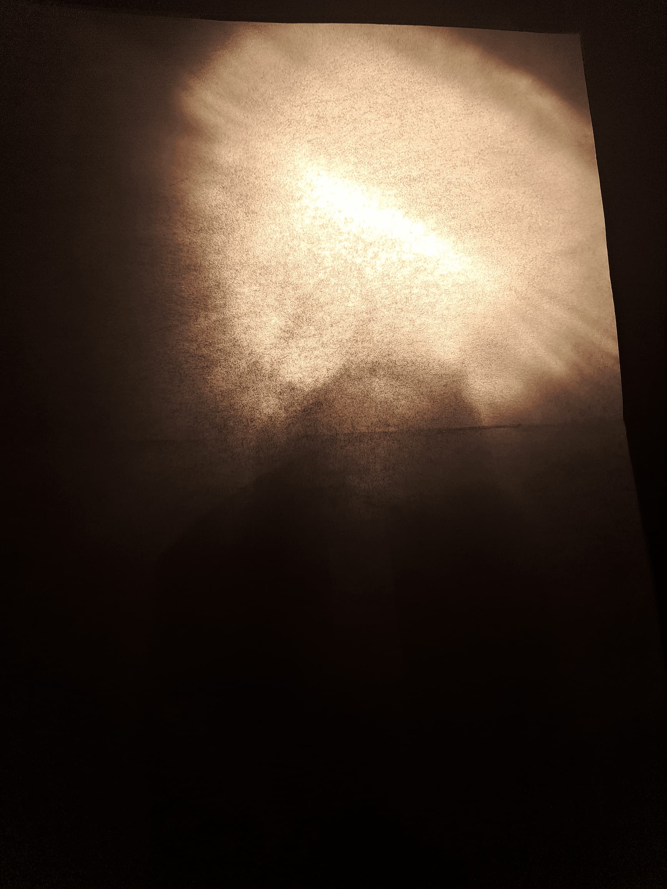
Cuando trabajo con Chromara, esa arquitectura cinética donde la luz, el color y el movimiento se articulan como un mismo lenguaje sensorial, no pienso en la máquina como ejecutora de instrucciones. La pienso como una entidad con presencia expresiva propia. Es como si el mecanismo no ilustrara una idea previa, sino que la genera en tiempo real, a través del movimiento, la refracción, la vibración, y otros fundamentos físicos de la luz. También la máquina tiene una especie de agencia estética que no controlo completamente, y esa pérdida de control es productiva. Es el equivalente a la jugada 78 de Sedol: el momento en que algo ocurre que ninguno de los dos, ni yo ni la máquina, habíamos anticipado.
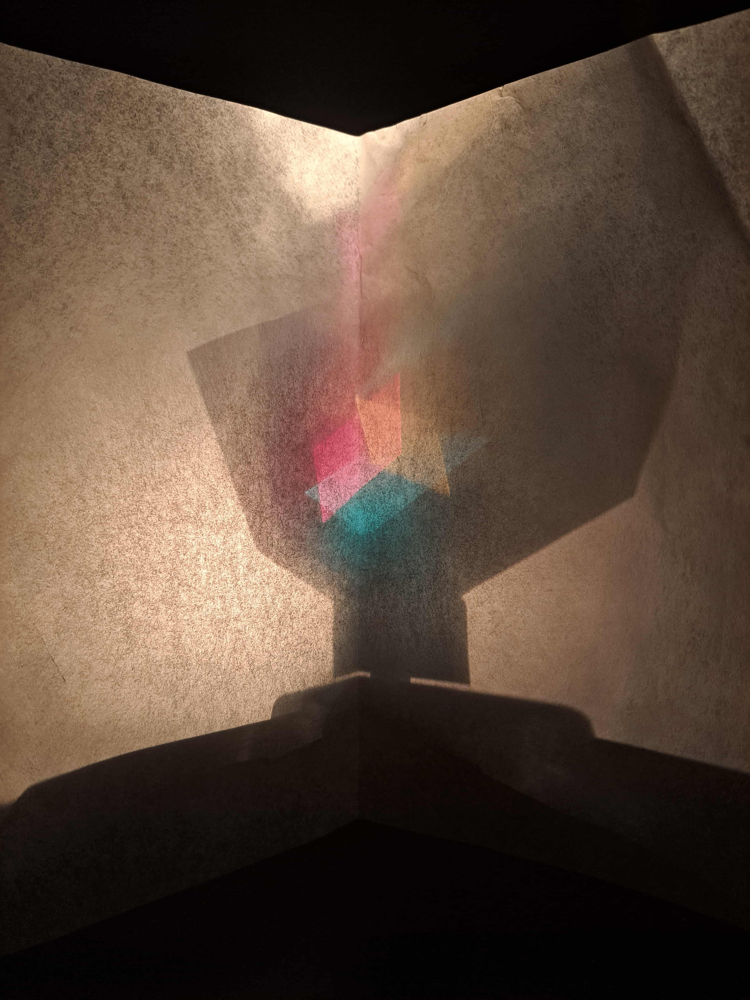
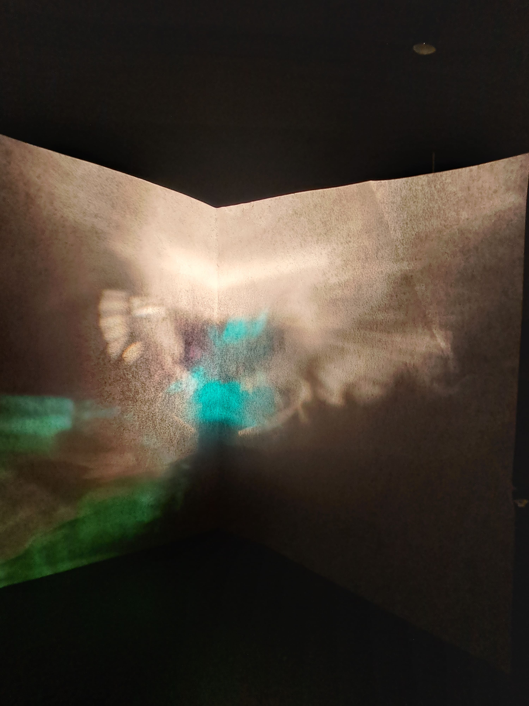
En otra obra de mi autoría, Cámara Orafónica, se radicaliza esa pregunta. La obra conjuga la materialidad del pasado, el cuerpo de una cámara de fuelle antiguo, con su textura, su acordeón plegable, su lógica óptica preindustrial, y con un algoritmo de control ocular contemporáneo que lee la mirada del espectador y, desde ella, regula los sonidos y las imágenes de la instalación. La cámara registra en la audio-escucha. Y lo que escucha es la atención. El ojo del visitante se convierte en el umbral entre el archivo histórico del dispositivo y la computación viva del algoritmo. Hay ahí una tensión temporal que no se resuelve y no debe resolverse. Lo que me interesa de esa tensión, pensándola ahora desde la discusión de la sesión, es que Cámara Orafónica no delega la experiencia a la máquina ni la retiene completamente en el humano. Opera en el entre. El algoritmo de seguimiento ocular no decide por el espectador: responde a él, lo traduce, lo convierte en parámetro. Pero esa traducción genera una forma de sensibilidad que ninguno de los dos, espectador o máquina, podría producir por separado. Es un modo de cognición distribuida donde la máquina no amplifica ni reemplaza, sino que revela algo que la mirada sola no sabría ver de sí misma.
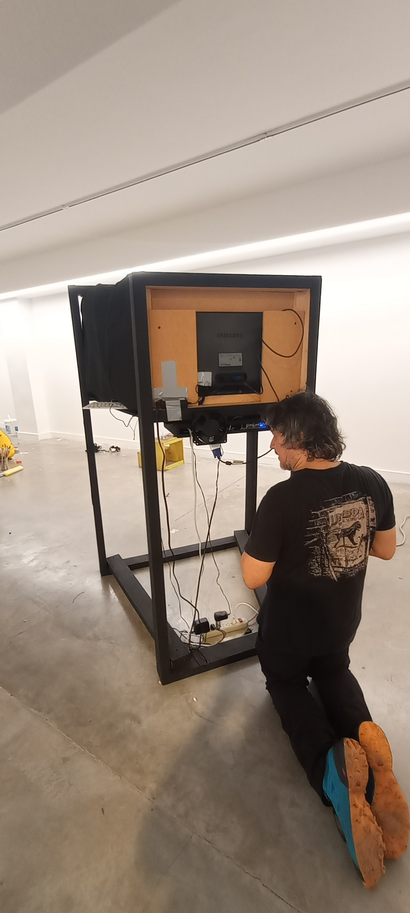
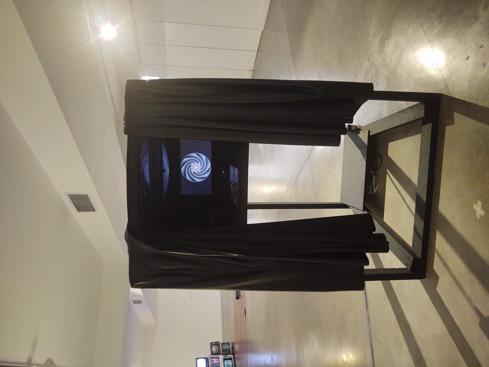
Eso es lo que separa este tipo de práctica del determinismo algorítmico que denuncia Coded Bias. No se trata de que la máquina decida, sino de que la máquina haga visible una dimensión de la experiencia que permanecería opaca sin ella. El algoritmo como instrumento de refracción, no de clasificación. El arco emocional de Sedol, del terror existencial a la resiliencia y la fascinación, ilustra la postura que busco habitar: usar la IA y la computación no para competir ni para automatizar, sino como superficie que me obliga, como artista e investigador, a moverme más allá de mis propios límites históricos. Las máquinas que construyo no son herramientas neutrales ni oráculos. Son artefactos con presencia, con historia material, con modos propios de sensibilidad que interpelan al cuerpo del espectador de maneras que el texto o la imagen estática no pueden. ¿Cuándo la máquina es un espejo que expande, y cuándo es un filtro que oprime? Chromara y Cámara Orafónica son, en ese sentido, mis laboratorios para ensayar respuestas que no puedo formular solo con palabras.
Arquitectura del lenguaje y control de la máquina
La ingeniería de prompts, entendida en su dimensión profunda, no consiste en redactar instrucciones con cortesía y claridad. Consiste en diseñar la estructura de un proceso: definir roles, establecer jerarquías de información, anticipar el tipo de razonamiento que se quiere provocar. Es, en el fondo, si lo comparo con mi experiencia práctica de programación, como la construcción de un parche visual-sonoro. Ahí es donde mi práctica con el software de arte multimedial Max/MSP/Jitter entró sin que yo la invitara explícitamente. Cuando desarrollo un parche o un patch en esos entornos de programación visual, no escribo código en el sentido clásico. Conecto nodos, modulo flujos de señales, defino rutas por donde circula la información. La lógica no es lineal sino relacional.
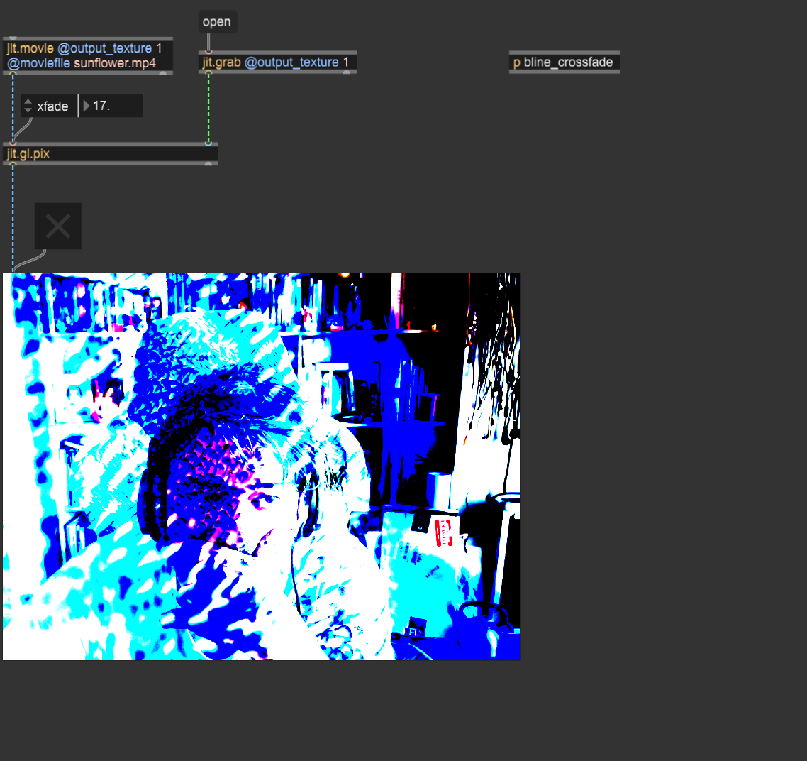
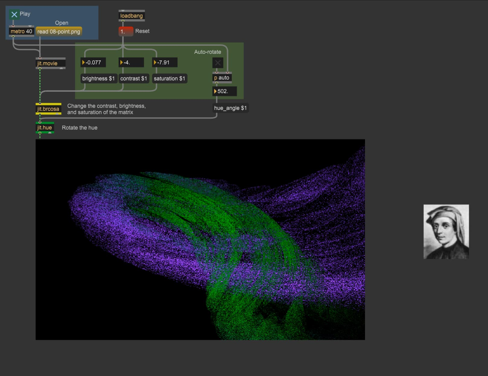
Un objeto recibe una señal, la transforma, la pasa. El resultado final no está en ningún nodo en particular, sino en la cadena, en la tensión entre los puntos de conexión. Un meta-prompt opera con la misma gramática al no pertenecer solamente a la configuración de una pregunta. La precisión del patch determina la calidad del output, y cualquier nodo mal configurado introduce ruido que contamina todo lo que viene después. Eso me cambió algo en la manera de relacionarme con herramientas como NotebookLM o Perplexity. Habían estado funcionando, lo reconozco, como una suerte de oráculo al que uno consulta y espera respuesta. Ahora los percibo como lo que son, es decir, como instrumentos de precisión que requieren una dedicada calibración.
¿Será que lo mismo aplica para todas las máquinas? Antes que revelar una “verdad”, la máquina debe ser calibrada, toda máquina, desde el fuego de la caverna y las pinturas de sus muros hasta las de tamaño molecular que atacan células infectadas por el cáncer. Antes de entregar el resultado se procesan los parámetros que uno diseña, así el investigador no interroga a la máquina: la afina. Para mi trabajo en arqueología de medios y música visual, esto tiene consecuencias metodológicas concretas. El análisis del estado del arte, la síntesis transversal de documentos, la identificación de genealogías conceptuales, todo ese trabajo puede operar con mayor rigor si asumo el rol de arquitecto del lenguaje y no de usuario pasivo.
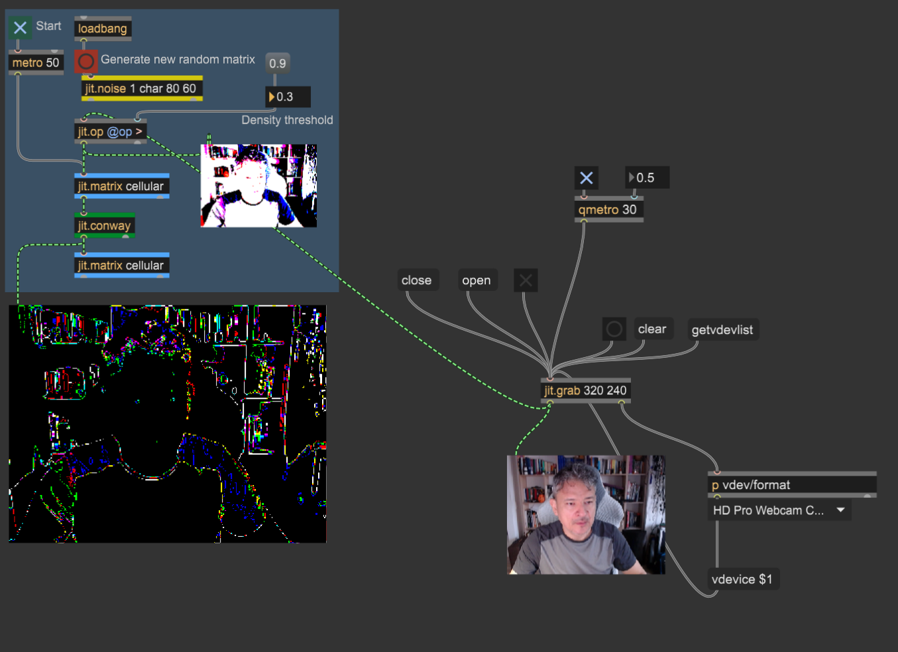
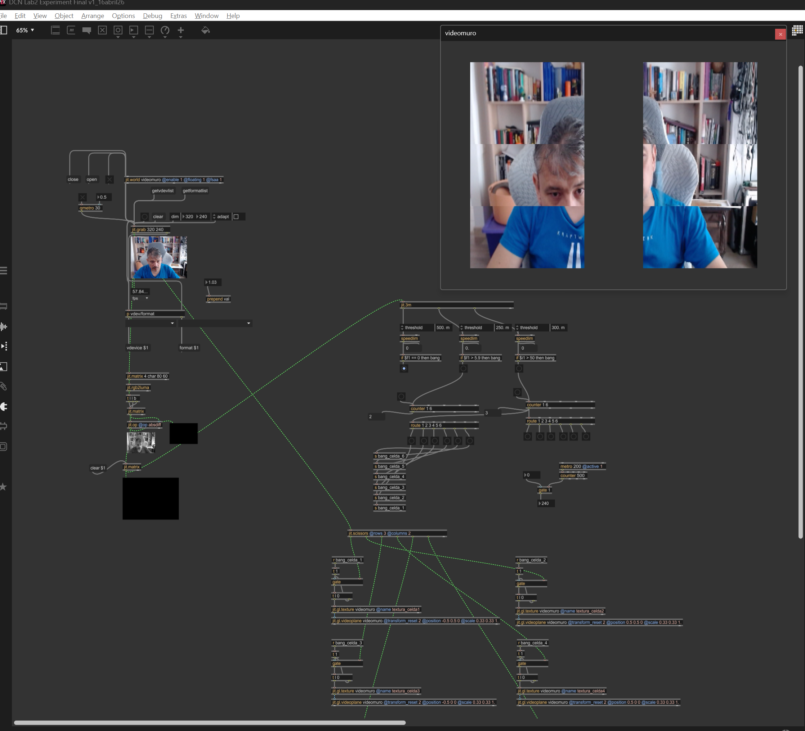
La IA como superficie de refracción controlada precisa que lo que controlo no es el resultado, sino las condiciones de la refracción. Pienso en Cámara Orafónica. El algoritmo de seguimiento ocular no produce imagen ni sonido por sí solo sino que responde a los parámetros que yo le di, a la lógica que construí, a las condiciones de escucha que diseñé en el espacio tanto virtual como físico. El espectador activa, pero la estructura previa determina cómo esa activación se traduce en experiencia. La conversación con la máquina, también allí, es una conversación diseñada. Lo que emerge de esta sesión no es una técnica nueva sino una actitud más consciente frente al instrumento, que puede hacer visible, con una velocidad y una exhaustividad que yo no tengo, aquello que mis propias preguntas le permiten ver. El investigador como arquitecto del lenguaje. El artista como calibrador de condiciones. Dos descripciones del mismo gesto.
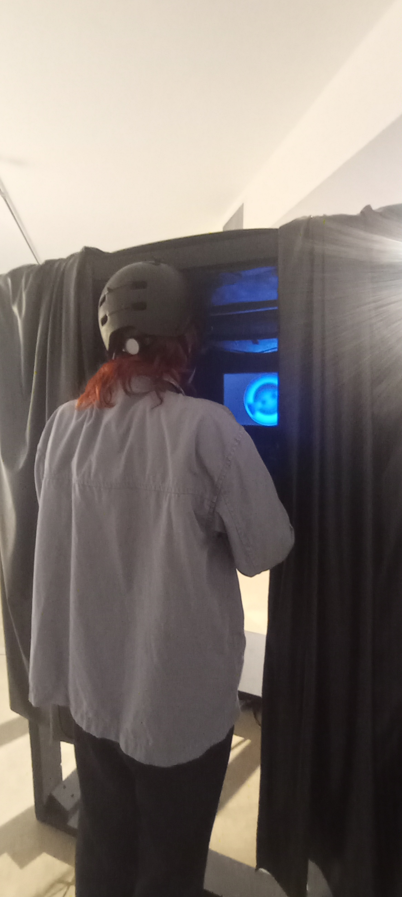
La materialización de la metodología MEASI
El tránsito de la arquitectura teórica del prompt hacia la ejecución concreta de la metodología MEASI produjo algo que pocas veces ocurre en un seminario: la sensación de que una herramienta encaja. No porque sea simple, sino porque su lógica interna es coherente con la manera en que yo ya trabajo cuando construyo una pieza visual o sonora. El proceso iterativo, la acumulación por capas, la síntesis que emerge del roce entre fuentes, no son ajenas a mi práctica. Es exactamente lo que hago cuando desarrollo un patch en Max/MSP o cuando calibro la respuesta de Chromara frente a distintas condiciones de luz.
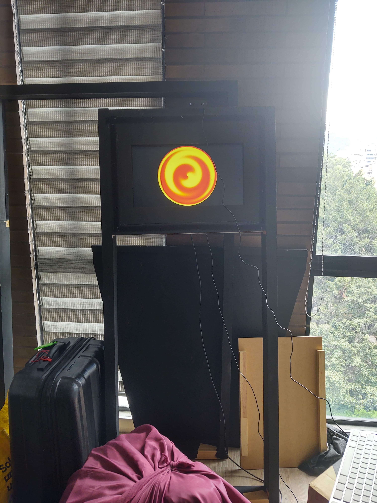
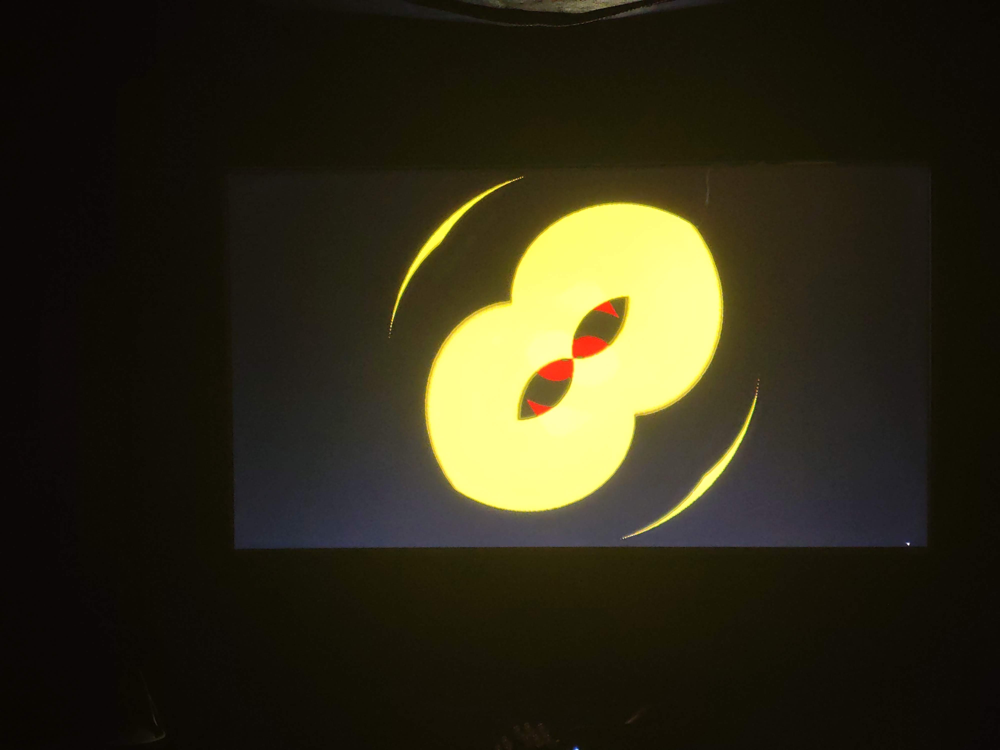
La metodología me resultó la más reveladora. Interrogar un texto de manera recursiva a través del modelo no es resumirlo sino más bien diseccionarlo con otro tipo de instrumento. El LLM devuelve una imagen procesada del argumento, sus costuras, sus silencios, sus tensiones no resueltas, que una lectura directa, por atenta que sea, tarda semanas en construir. Lo llamo, y creo que el término es justo, una validación tipo espejo: el texto regresa transformado, y en esa transformación aparece lo que yo no había podido ver todavía. No porque la máquina comprenda más, sino porque opera sin los sesgos acumulados de mi propia lectura previa o desde fuera de mi punto ciego.
Para un proyecto enraizado en la arqueología de medios, eso tiene valor metodológico específico. Los textos de Siegfried Zielinski, Wolfgang Ernst o Jussi Parikka no se agotan en una lectura sino que se estratifican en múltiples capas de complejidades. Cada vuelta revela una capa nueva. La interacción recursiva con el modelo imita, en cierta medida, esa lógica geológica, mostrando que no se avanza linealmente sobre el texto, sino que se profundiza en él como si se estuviese en una excavación. La construcción de la matriz bibliográfica estructurada resolvió algo que venía postergando con cierta culpa. La parálisis por saturación de fuentes es real. En la etapa doctoral, el archivo crece más rápido que la capacidad de procesarlo, y la acumulación sin orden se convierte en ruido que no aporta. La matriz convierte esa dispersión en una base de datos coherente, donde cada texto es analizado bajo los mismos criterios de metadatos, hallazgos y brechas. El ecosistema de lectura deja de ser un cúmulo amorfo y adquiere una topología cercana, un terreno donde se puede pisar, y así, una topología se convierte en un mapa que puede ser navegado.
De nuevo pienso en Cámara Orafónica. La obra funciona porque el espacio de la instalación está estructurado. Hay parámetros, hay relaciones definidas entre el movimiento ocular del espectador y la respuesta sonora e icónica de la máquina. Sin esa arquitectura previa, la experiencia sería caos, no densidad. La matriz bibliográfica opera con la misma lógica, en el sentido que no elimina la complejidad, sino que la organiza para que pueda ser habitada. Las últimas fases de la metodología MEASI, presentan síntesis temática y triangulación de información, y definen el momento en que el campo de conocimiento deja de ser territorio ajeno y empieza a tener la forma de un argumento. Se visibilizan los hilos narrativos y emergen las tensiones conceptuales entre autores como líneas de fuerza que puedo trazar, cartografiar, intervenir. Y sobre ese mapa ya construido, mi propia voz como investigador-creador puede posicionarse con mayor precisión.
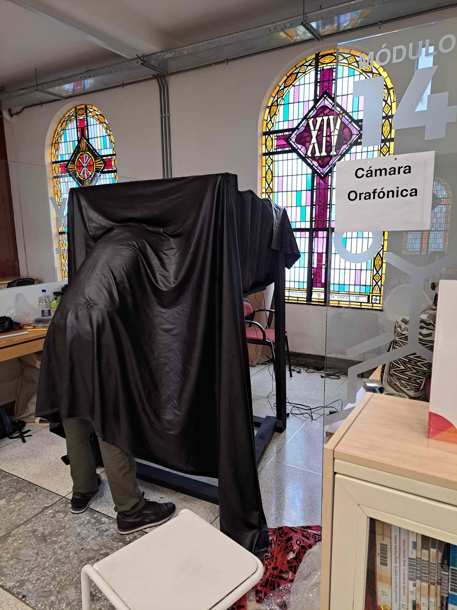
NotebookLM, en este marco, deja de ser una herramienta de consulta para convertirse en un instrumento de filtrado transversal que me permite leer con mayor resolución. Lo que esta sesión dejó claro es que la metodología MEASI puede consolidar el estado del arte inicial de una investigación doctoral desde criterios rigurosos. Pero como toda buena amplificación, lo sé desde el trabajo con señales en mi taller, lo que se amplifica no es solo la señal, sino también el ruido. Por eso la postura crítica del investigador sigue siendo irreemplazable. La máquina afina, pero quien escucha y quien decide qué vale la pena escuchar sigo siendo yo.
El Procesamiento de Lenguaje Natural como agente narrativo
Hay algo significativo en que el cierre del seminario haya tomado la forma de exposiciones. No una clase magistral, sino cada quien mostrando cómo aterriza esto en su propio proyecto. Esa diferencia importa. La teoría se prueba cuando alguien tiene que habitarla en voz alta. Al preparar y presentar mi aproximación, el NLP adquirió la densidad de un instrumento de trabajo real. En un proyecto que indaga en las capas de la arqueología de medios, la posibilidad de trazar cartografías textuales a gran escala, identificando conexiones latentes entre autores, tensiones discursivas entre campos, genealogías conceptuales que atraviesan décadas de producción académica, las cualidades de la escala de lo que puedo ver cambian con mucha fuerza.
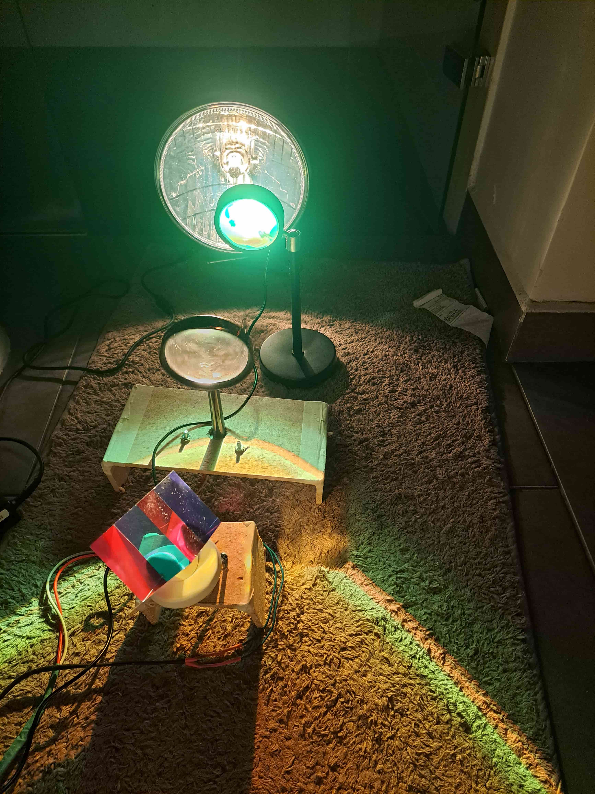
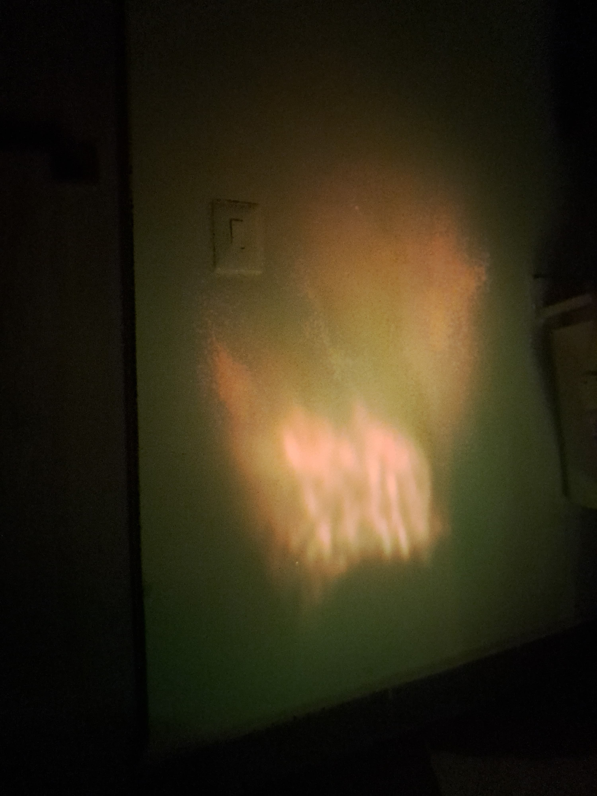
La imagen que me surgió durante la exposición fue la del estroboscopio. En Chromara, el estroboscopio no ilumina continuamente sino que genera la ilusión de congelar el instante. A cierta frecuencia, el movimiento que sería invisible por su velocidad se vuelve legible, casi escultural. El NLP opera con una lógica análoga sobre el corpus documental, ya que la frecuencia del algoritmo detiene el flujo de información y hace visibles patrones narrativos que, bajo lectura directa y secuencial, vibrarían demasiado rápido para ser captados. No se ralentiza el pensamiento sino que lo hace estroboscópico al detener instantes medibles.
Pero esa revelación técnica trajo consigo algo que no esperaba, unas ganas inmensas de profundizar en las áreas de mi investigación con la mayor exigencia. La promesa de la IA coquetea permanentemente con la fantasía de la automatización total del pensamiento. Y es una fantasía seductora, especialmente en la etapa doctoral, cuando el archivo crece más rápido que la capacidad de procesarlo. Sin embargo, la arquitectura de la metodología MEASI es explícita al respecto. Por ejemplo, la Fase 6, la evaluación experta, la escritura final, la interpretación que cierra el ciclo, es un territorio estrictamente humano. El algoritmo no reemplaza al autor. Asume el rol de copiloto estructurado, y esa distinción no es menor.
Delegar el procesamiento masivo de datos a la máquina no reduce el trabajo crítico sino que lo desplaza y lo intensifica. Ya no se trata de recolectar y organizar fuentes, sino de validar con profundidad lo que el modelo devuelve, afinar los argumentos, triangular constantemente los resultados contra el juicio propio. La energía que antes se consumía en la gestión del archivo ahora se concentra en la interpretación. Y eso, lejos de simplificar el rol del investigador-creador, lo radicaliza y le devuelve el área de la disrupción real: la metodología de la investigación – creación como medio y modo de aporte para la generación del conocimiento nuevo[cite: 122, 123, 124, 125].
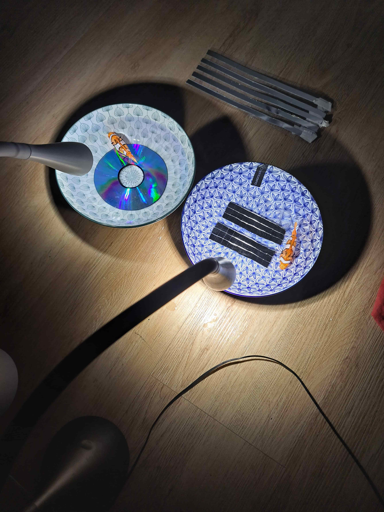
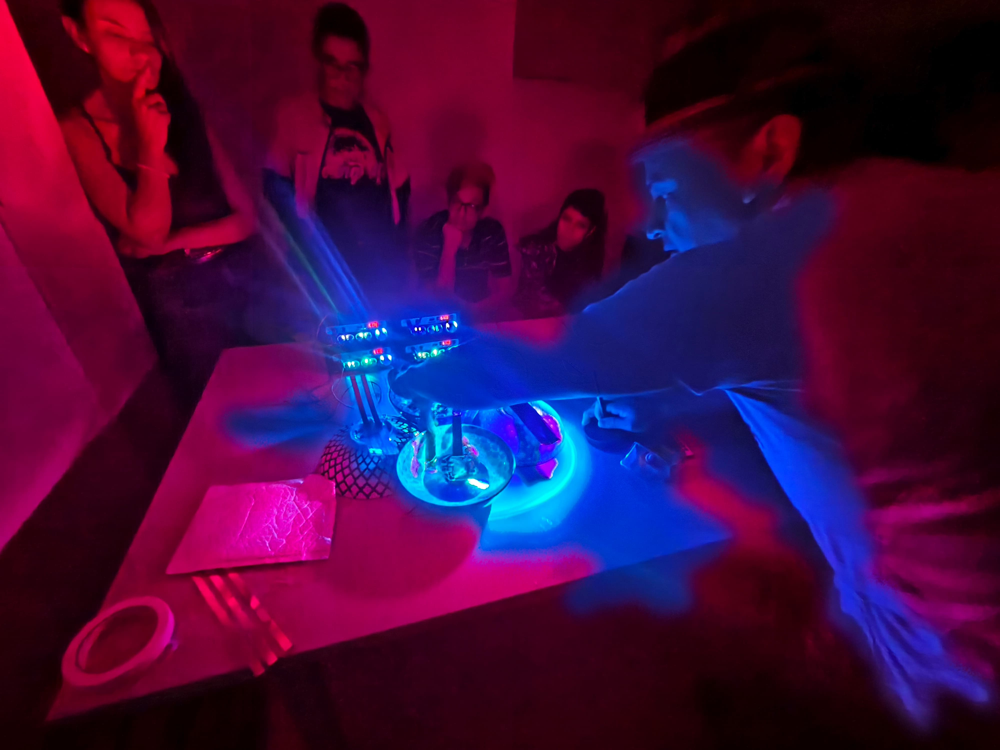
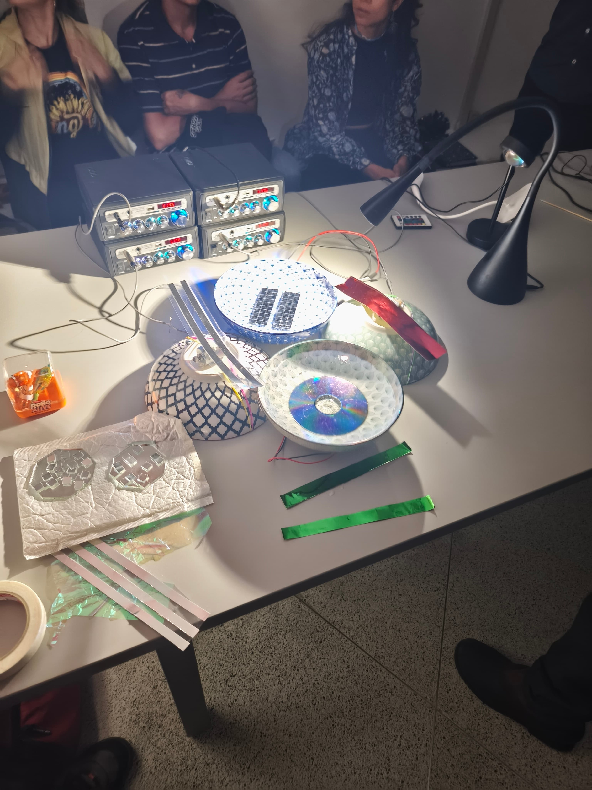
Pienso en Cámara Orafónica una última vez en este ciclo. El algoritmo de seguimiento ocular lee la mirada del espectador y genera respuestas sonoras e icónicas en tiempo real. Pero el espacio de posibilidades que esa respuesta puede habitar, como los parámetros, las relaciones, las condiciones de escucha, los diseñé yo. La máquina ejecuta dentro de una arquitectura que tiene mi firma. Si esa arquitectura está mal pensada, ninguna precisión del algoritmo la salva. Si está bien construida, el algoritmo puede ir a lugares que yo solo no habría alcanzado. El NLP me entrega un mapa topográfico de las narrativas. Extrae conceptos, traza conexiones, señala densidades y vacíos. Pero la decisión de por dónde caminar, qué grietas abrir en la caja negra y qué postura asumir frente a lo que aparece, eso sigue siendo una artesanía. Una responsabilidad que no puedo ni quiero delegar. El seminario cierra aquí. Pero el proceso que abrió apenas empieza a sedimentarse.